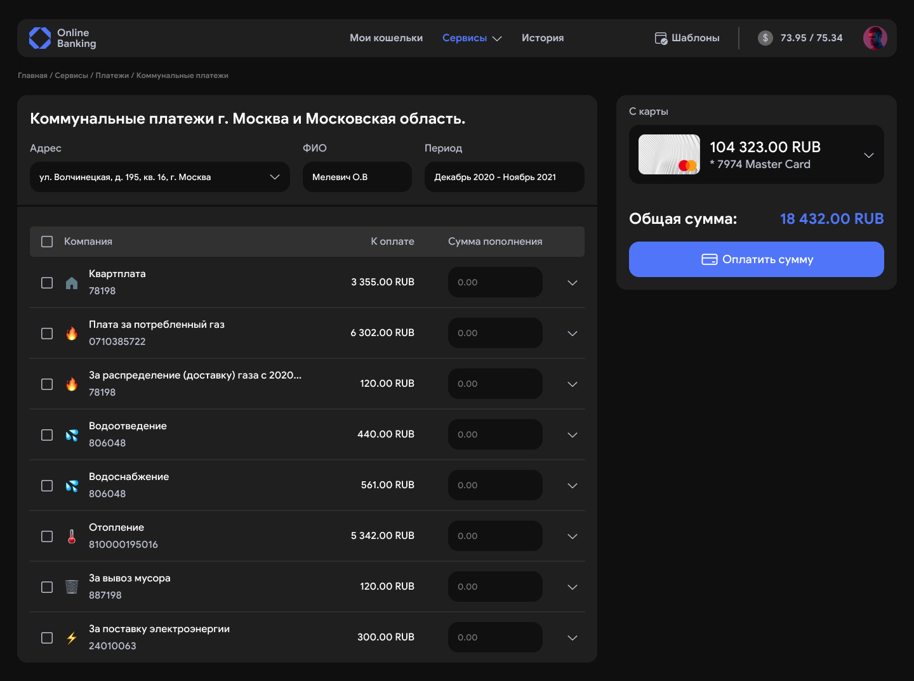
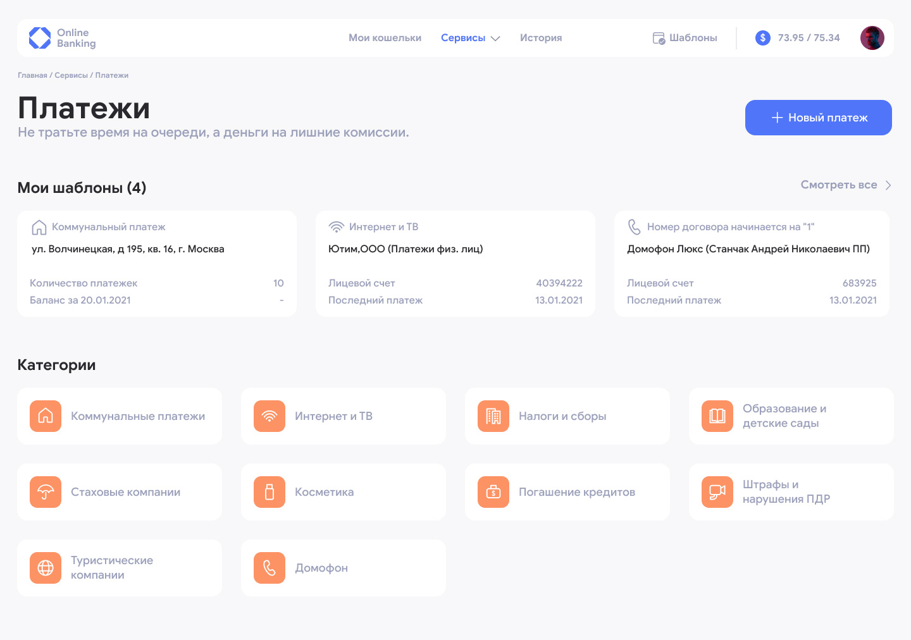
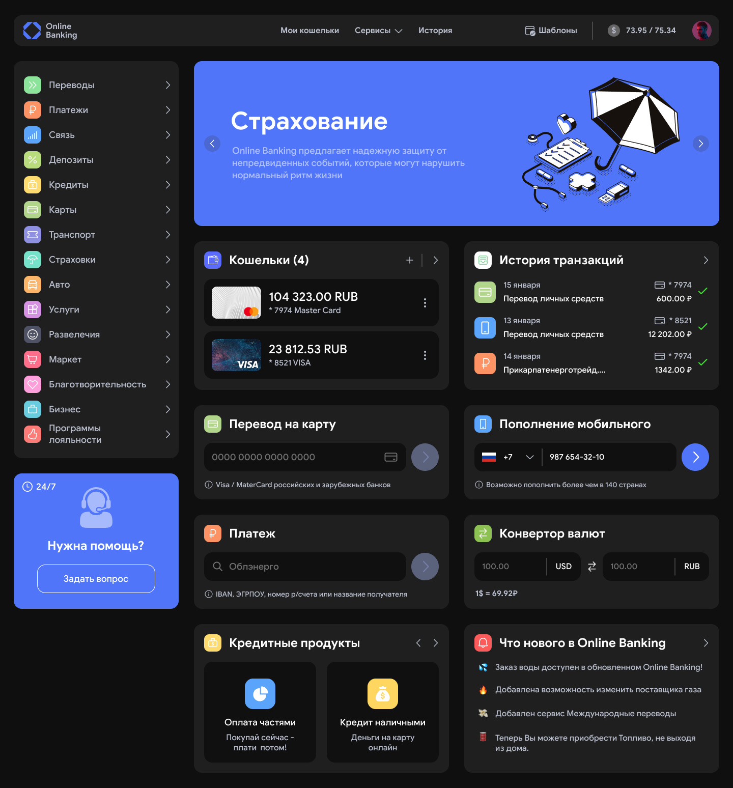
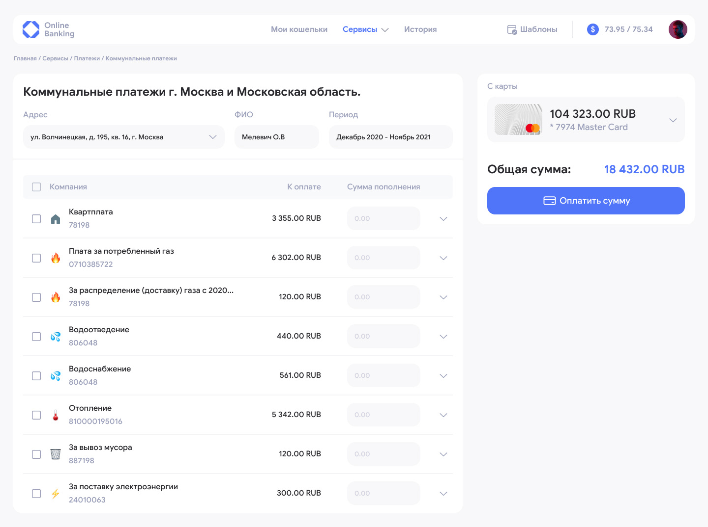
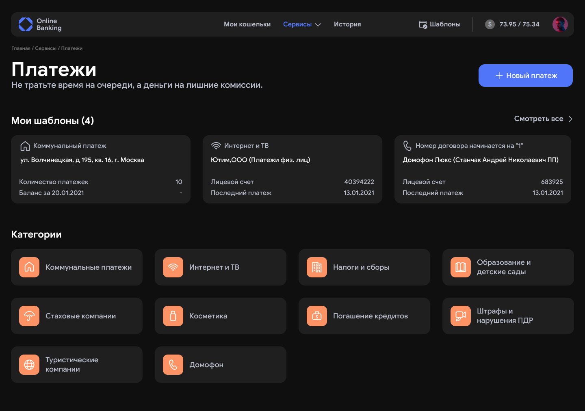
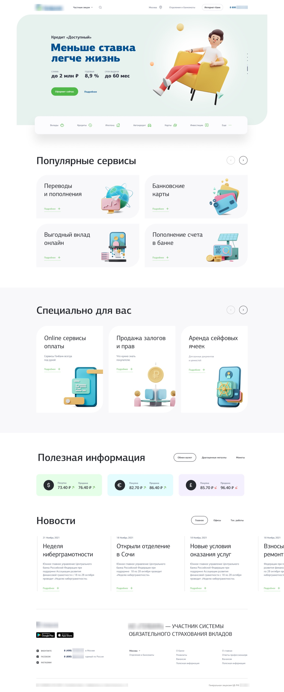
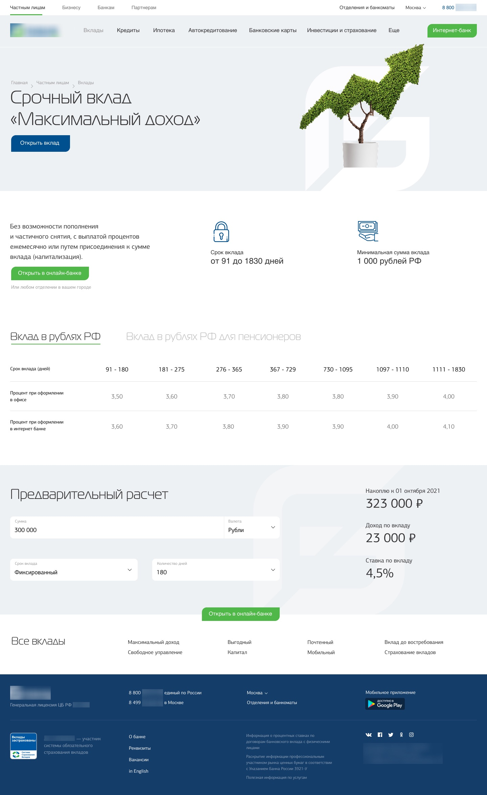

Онлайн-банкинг
Концепт цифровых сервисов банка для частных клиентов: веб-версия интернет-банка в светлой и тёмной теме и сайт банка. Проект под NDA, название банка скрыто.




Задача:
В 2021 году банк готовил обновление цифровых каналов для частных клиентов. Нужно было предложить концепт веб-версии интернет-банка и нового публичного сайта: показать, как может выглядеть ежедневная работа с деньгами в браузере и как клиент приходит к продукту банка с сайта.
Что было сложного:
- Уместить на одном экране все частые действия: переводы, платежи, пополнение телефона, обмен валют — и не перегрузить его;
- Сделать интерфейс сразу в двух темах, светлой и тёмной, на одних и тех же компонентах;
- Объяснить на сайте условия банковских продуктов так, чтобы в них разобрался человек без финансового образования.
Роль:
Арт-директор. Концепция, структура экранов, визуальный стиль, UI обеих тем и макеты сайта.
Этап #1
Главная: всё, ради чего заходят в банк, на одном экране
Главную я собрал как панель из виджетов. Каждый отвечает за одно действие, и большинство из них можно выполнить, не уходя со страницы:
- Кошельки с балансом по каждой карте и история последних операций со статусом.
- Перевод на карту, пополнение мобильного, поиск получателя платежа и конвертер валют — поле и кнопка прямо в карточке.
- Под каждым полем — короткая подсказка: какие карты принимаются, по каким реквизитам искать.
- Кредитные предложения и новости сервиса вынесены вниз, чтобы не мешать повседневным действиям.
- Боковое меню на 15 разделов, у каждого своя цветная иконка: нужный раздел находится взглядом, а не чтением.
- В шапке — курс доллара, шаблоны и профиль, доступные с любой страницы.
- Блок поддержки 24/7 всегда под меню.
Этап #2
Платежи: повторить прошлый платёж быстрее, чем найти новый
Большинство платежей человек делает каждый месяц одним и тем же получателям. Поэтому в разделе первыми стоят шаблоны: адрес или название услуги, лицевой счёт и дата последнего платежа. Ниже — десять категорий получателей, от коммунальных услуг до штрафов ГИБДД, для всего остального.
Самый сложный сценарий — коммунальные платежи. Начисления приходят от нескольких поставщиков, и платить их по одному долго.
- Все начисления по адресу собраны в одну таблицу.
- Оплата всех услуг одной кнопкой с одной карты.

Как устроен экран оплаты:
- Сверху адрес, плательщик и период: если у клиента несколько квартир, он переключает адрес в том же месте.
- Каждая услуга — строка с иконкой, номером лицевого счёта и суммой к оплате. Галочкой выбирают, что оплатить сейчас.
- Рядом поле для своей суммы, если хочется заплатить больше или пополнить счёт заранее. Строку можно раскрыть и посмотреть детали начисления.
- Справа закреплена карта списания, итоговая сумма и кнопка оплаты — итог всегда перед глазами.
Этап #3
Тёмная тема: те же экраны, другой контраст
Каждый экран сделан в двух темах. Тёмная — не инверсия светлой: фон почти чёрный, карточки и поля на ступень светлее, поэтому структура страницы читается по слоям, без рамок и теней.
Синий акцент, цвета иконок разделов и статусы операций в обеих темах одинаковые. Клиент, переключивший тему, находит кнопки и разделы там же, где привык.
- Обе темы построены на одних компонентах: меняются только цвета фона, поверхностей и текста.
- Отдельно подобраны оттенки для плейсхолдеров и подсказок, чтобы они не терялись на тёмном фоне.

Этап #4
Сайт для частных клиентов: от предложения до заявки

Сайт — первое, что видит будущий клиент. Главную я выстроил от предложения к справочной информации:
- Первый экран продаёт один продукт: ставка, сумма и срок крупно, кнопка заявки рядом.
- Сразу под ним — панель быстрого перехода в разделы: вклады, кредиты, ипотека, автокредит, карты, инвестиции.
- Дальше — популярные сервисы и персональные предложения в карточках с объёмными иллюстрациями, курсы валют и новости банка.
- Иллюстрации в одном стиле на всех карточках — банк выглядит дружелюбно, а не строго.
- Вход в интернет-банк всегда в шапке.

Страница продукта на примере вклада отвечает на вопросы клиента по порядку:
- Главные условия — срок и минимальная сумма — сразу под заголовком, с иконками.
- Ставки сведены в таблицу по семи диапазонам сроков. Отдельной строкой видно, что в интернет-банке ставка выше, чем в офисе.
- Калькулятор сразу показывает итоговую сумму, доход и ставку для введённых значений.
- Внизу — все вклады банка, чтобы сравнить и перейти к соседнему продукту.
- Кнопка «Открыть в онлайн-банке» повторяется после условий и после расчёта — там, где клиент принимает решение.
- Шаблон страницы подходит и для других продуктов: кредитов, карт, ипотеки.